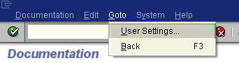
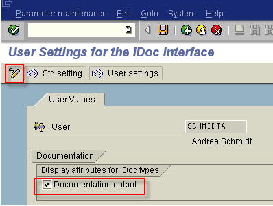
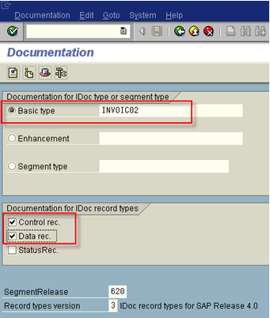
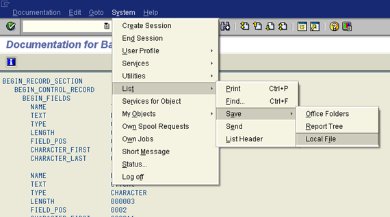
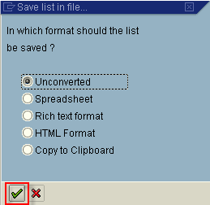
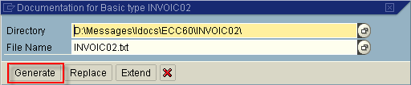

Previous
Previous  Table of Contents
Table of Contents 

BIC MD GUI - Import SAP Idoc
{kind=link}
{kind=link}

This information is only relevant for customers with SAP systems.
This Import will replace the need for deploying ABAB code in SAP (IDoc Structure) or using Transport IDocs. The SAP Parser structure is converted to a BICMD Message and imported to the current project.
These are one time settings only. For SAP Systems Versions 6.0 and higher navigate to Transaction WE60.
- Choose the menu option Goto | User Settings.
|  |
| User Settings |
{kind=link}
- On the following screen, select the button Modify, and then check the options Documentation Output and Field Value Output.
|  |
| User Settings for IDoc Interface |
{kind=link}
(This is required to get the Codelist values in the Parser, and it will also enable the documentation link in the HTML documentation).
SAP Transaction WE60:
- Put in the Idoc Type, either Basic Type or Enhancement for customized IDocs.
- Be sure to select the options Control Record and Data Record, do not include Status Record.
|  |
| Documentation |
{kind=link}
- Select the correct segment release and record type version.
- Select Parser Structure (F9) or click on this icon .
- Save the Structure as System | List | Save | Local File.
{kind=link}
|  |
| Save Structure |
{kind=link}
- Select the option Unconverted.
|  |
| Format of List |
{kind=link}
- Provide the folder where the file should be generated in, and click on the button Generate.
|  |
| Generate Documentation |
{kind=link}
Start the import by selecting from the menu File | Import SAP IDOC, or click on the icon .
The following dialog is opened:
|
Property |
Description |
|---|---|
|
SAP segment release |
The release of your SAP system where you downloaded the layout from. |
|
SAP record types version |
If your SAP release is higher than 4.0 your record types version is "3", if your SAP system, or the record types version you are using is from an SAP release lower than 4.0, the IDoc version is "2". The difference is mainly in the EDI DC4 record, and in the length of the first fields for each record. |
|
Record Delimiter |
Typically if your BIS is running in a Windows environment this is set to "CRLF", if your BIS is running in a Linux or Unix environment, this is set to "LF". |
|
Language |
The program is tested for English and German. This is used as part of the naming convention of the resulting Message Layout only. |
|
Encoding |
Here the Java encoding corresponding to the encoding, which was set for the export from SAP has to be set. It is used to initialize the reader of the import. If no encoding is set, the current java vm encoding is used. For supported encoding of the Sun VM, refer to http://java.sun.com/j2se/1.3/docs/guide/int/encoding.doc.html. |
The OK button is enabled, if all properties are set.
By clicking the button OK the file chooser is opened. Select the downloaded file from SAP for the import.